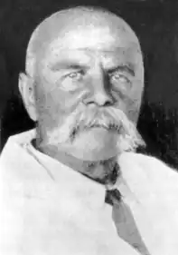
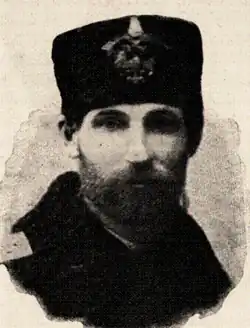

Життя і літературно-громадська діяльність Т. Зіньківського нагадує спалах яскравої зорі, яка своїм сяйвом викликає подив і зачарування. Гортаючи сторінки його творів, читаючи листи, дивуєшся, як могло статися, що така світла постать, така всебічно обдарована особистість залишилася поза увагою істориків літератури. Відповідь можна знайти в одному з листів Т. Зіньківського до петербурзького професора О. Пишна, який в одній зі своїх робіт зневажливо висловився про українську літературу, відводячи їй роль "провінційного письменства". Заперечуючи це твердження, Зіньківський писав: "...Звісно, бездержавність сьогочасна заважує багато розвиткові вкраїнського письменства і через неї навіть зовсім спинилося письменство вкраїнське в Росії" (1).
Так, мав рацію Зіньківський, зауважуючи, що відсутність самостійної держави негативно позначається як на духовному, так і економічному розвиткові того чи іншого бездержавного народу.
Родина Аврама та Уляни Зіньківських була щедрою на новонароджених: з 1861 по 1878 р. у невеличкому будинку на тихій мальовничій Лісівській вулиці в м. Бердянську з'явилося на світ Божий четверо хлопців (Трохим, Михайло, Григорій, Кирило) та троє дівчат (Євдокія, Ганна, Марія). Сина, який народився 23 липня (4 серпня за н. ст.) 1861 р., в день святих мучеників Трохима та Теофіла, батьки за давньою традицією нарекли Трохимом, не відаючи тоді, що життєвий шлях їх первістка буде важким і мученицьким, що його зірка передчасно погасне, що своє життя, природний хист віддасть він служінню Україні, рідному народові. 1 Зіньківський Т. Тарас Шевченко в світлі європейської критики // Писання Трохима Зіньківського: В 2 т. / Зредагував та життєпис написав В. Чайченко. — Л., 1893. — Т. 2. — С. 78. Далі, посилаючись на це видання, зазначаємо в тексті том і сторінку. Його поява на світ збіглася з роком смерті Т. Шевченка й знаменувала собою те, що Україна народжувала й народжуватиме вірних синів і дочок, які, осяяні пророчим словом Кобзаря, не дадуть їй загинути на цій грішній землі. Родина жила бідно, адже заробітки батька, колишнього хлібороба, а тепер морського конопатчика, були мізерними. Мати, Уляна Євтихіївна, тягла на собі всю хатню роботу й господарську, доглядала за дітьми. Матеріальні нестатки певною мірою скрашувала чарівна приазовська природа, на лоні якої проходило босоноге дитинство Трохима. "Природа з раннього дитинства оточувала мене своїм цілющим впливом... Поля, луги, сади, море — завжди мали для мене якусь незбагненно чарівну принаду"1, — напише він згодом в автобіографії. Любов до батьківської хати, до моря він нестиме у своєму серці до останку: бо саме сюди, вже безнадійно хворий, приїде у 1891 р. з великим сподіванням знайти порятунок від смерті. Море було улюбленою стихією хлопця, зачаровувало у всі пори року. Та й сам Зіньківський, як вдало підмітив Б. Грінченко, "трохи підходив до його і своєю вдачею: як і море, він був мовчазний та неподільчивий на те, що було у його душі... ховав у самому собі свої думки й почування і завсігди виявляв велике небажання звіряти їх кому. Це бажання сховатися з своїм горем зосталося в Трохима на все життя" [1, XI]. Перші уроки грамоти одержав від батька, що "вельми любив науку і любив з людьми розумними побалакать"(2). З теплотою й святою шанобою згадував Трохим й свою хресну матір, яка непідкупною і щирою побожністю зуміла вдихнути в нього глибоке релігійне почуття, збудила інтерес до Святого Письма. Читання релігійних оповідок так захопило душу хлопця, що він навіть мріяв оселитися на Афоні, коли виросте, за що товариші прозвали його "ченцем". Батько радів за сина, бачачи, як той тягнеться до книги, успішно опановує грамоту. В Бердянську на той час була міська приходська та земська школи. Батько віддав Трохима до приходської не тому, що друга була далеченько від їхнього дому, а через матеріальну скруту. Зіньківський навчався блискуче. Батько пишався успіхами сина, а тому кожен похвальний лист оправляв у рамку під скло і вивішував на стінах у хаті. 'Див.: Кіраль С. Неопублікована автобіографія Т. Зіньківського // Сучасний погляд на літературу: 36. наук, праць. — К., 1999. — Вип. 1. — С. 143. 2 Спогади Василя Кравченка про Трохима Зіньківського / Вступ, ст. С. Кіраля // Київська старовина. — 1997. — № 3—4. — С. 162. У 1873 р. в Бердянську вже діяли класична гімназія та двокласне міське училище. Не маючи змоги платити за навчання в гімназії, Аврам Зіньківський віддає сина до училища. Там Трохим провчився з осені 1873 р. по червень 1876 р. Навчання у школі, училищі — це період, коли юнак був у полоні читання: "Читання в період шкільного життя стало моєю пристрастю, читав все, що попадалось під руку, так що попадись підручник з хімії, я з однаковим завзяттям взявся би його читати подібно гоголівському Петрушці. Кажу це не для красного слівця, а тому що зі мною було щось таке подібне" (2). У 13 років він прочитує працю Д. Щеглова "Історія соціальних тем", на все життя запам'ятовує уривки з Платонової науки про вільну державу, теорії Сен Сімона, Фур'є. Найбільше враження тоді на нього справили твори Майн Ріда, з яких у буйній уяві хлопця поставали загадкові Африка та Америка і до яких мало не помандрував із своїм другом В. Кравченком. Та для цього їм бракувало всього-навсього власного корабля. В училищі пробуджується інтерес до рідної мови, української пісні: читає твори Г. Квітки-Основ'яненка, "Чорну раду" П. Куліша, "Кобзар" Шевченка та ін. Після закінчення училища Зіньківський мріє стати учителем і вирішує вступити до Феодосійського учительського інституту. Оскільки в інститут приймали з 16 літ, то довелося ще рік після закінчення училища пробути там за старшого учня. А наприкінці літа 1877 р. він з десятьма карбованцями в кишені подався до Феодосії. На той час йшла російсько-турецька війна, і тому інститут перевели до Карасубазара (нині м. Білогірськ). На жаль, кошти в дорозі швидко танули, а тому верстали шлях із Феодосії до Карасубазара (43 км) пішки. Це був початок невдач, які переслідували Трохима все життя. Прибувши, він довідується, що вступні екзамени перенесено на пізніший строк. Зіньківський голодував, і якби не горіхи, що росли, на щастя, неподалік інституту, то не зміг би протриматися й успішно скласти іспити. Однак пробув Зіньківський в інституті не більше двох тижнів, бо доля круто поміняла його життєвий шлях. Голодування, хвилювання під час іспитів негативно відбилися на здоров'ї Зіньківського. Він не міг читати навіть при свічках. Дізнавшись про це, директор інституту застеріг його, що через постійне читання при такій хворобі взагалі можна втратити зір. За порадою директора й на зібрані вчителями кошти він поїхав до Харкова. Грошей вистачило не лише на дорогу, а й на лікування. Відомий офтальмолог Л. Гіршман успішно прооперував Зіньківського, виявивши трахому. "Див.: Кіраль С. Неопублікована автобіографія Т. Зіньківського // Сучасний погляд на літературу: 36. наук, праць. — К., 1999. — Вип. 1. — С. 144—145. Бажання повернутися в інститут було велике, але, все обміркувавши, він залишається в Харкові. Тут йому довелося спізнати чимало біди. Гроші закінчилися, знайомих або родичів не мав. їхати назад додому теж не хотів, бо, за вдачею гордий і незалежний, соромився батьків, адже прагнув чогось кращого домогтися у житті, та не вийшло. Спочатку поталанило найнятися на роботу до пекаря: носив на базар продавати пиріжки. Згодом працював у друкарні робітником з 7 ранку до 9 вечора, крутив колесо друкарської машини в душному приміщенні, за що одержував 6—8 карбованців на місяць, тут і ночував1. Він хотів заробити грошей, а вже тоді вертатися до батьків, аби не ускладнювати й так нелегкі їхні матеріальні проблеми. У Бердянськ Зіньківський повернувся на початку липня 1879 р. Усе літо вони з приятелем В. Кравченком готувалися до іспитів за програмою для осіб, які виявили бажання вступити до війська. А були це, як записано у свідоцтві, закон Божий, російська мова, арифметика, геометрія, історія, географія. Ці іспити вони успішно витримали 13—14 вересня 1879 р. при Бердянській гімназії. Зіньківський одержав 24 бали, що давало право вступати на військову службу "вольноопределяющимся" на правах третього розряду. 24 вересня цього ж року вони разом з В. Кравченком вирушили пароплавом, маючи в кишені по 10 карбованців кожен, до Керчі, звідти шлях пролягав до Сімферополя, де вже служив їхній това риш. Аби зекономити кошти та зберегти взуття, хлопці пройшли босоніж 65 верст. 17 жовтня 1879 р. Зіньківського було зараховано на військову службу. Військова атмосфера справила на нього гнітюче враження: "Все мене гнітило, здавалось диким, незрозумілим, супротивним моїй натурі. Мені довелось довго звикати до туго застебнутого мундира, вже не кажучи про більш суттєві умови, які впливали на настрій"2. Через 10 місяців (24 серпня 1880) Зіньківський вступив до юнкерського училища в Одесі, де доля звела його з Л. Смоленським, учителем історії та географії, згодом відомим ученим, громадським діячем, близьким приятелем М. Драгоманова. Його лекції користувалися великою популярністю: "Години лекцій Смоленського в молодшому класі — то було велике свято не тільки для всіх старших класів, а й для офіцерів, викладовців і, навіть, їхніх родин. Як тільки, наприклад, пролунала чутка, що буде лекція на тему "Боротьба кляс в Римі", то всі інші заняття припинялись — слухачі лавою вливались до головної авдиторії. Публічність заповнювала не тільки парти, а розташовувалась на вікнах, на підлозі — де хто міг. На сходах же викладовцевої катедри примощувався сам начальник] школи" [ф. 111, № 37660, арк. 14]. 'Див.: Сучасний погляд на літературу. — К., 1999. — Вип. 1. — С. 145. Чнститут рукопису НБУ ім. В. І. Вернадського. — Ф. 111, спр. 39680, арк. 1. Далі у дужках зазначаємо номер фонду, справи, аркуш. Л. Смоленський давав читати Зіньківському найкращі твори письменників, знайомив з історією Запорозької Січі, навертав до праці для української справи, звертав увагу на давність походження української мови, ілюструючи це прикладами з древніх літописів та "Слова о полку Ігоревім". На фактах історії, писав Б.